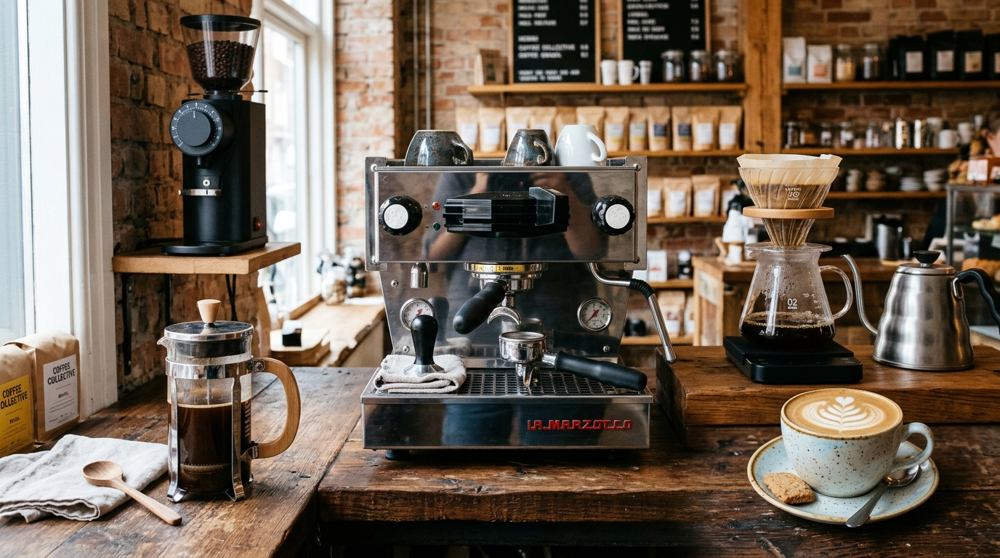

1. [Moedor Cônico 1]
Descrição técnica do equipamento localizado no canto superior esquerdo, utilizado para moer os grãos de café e ajustar a granulometria conforme o método de preparo desejado.
2. [Filtro V60 2]
Descrição técnica do utensílio utilizado no preparo de café por filtragem manual, com formato cônico e ranhuras internas que favorecem o fluxo da água. Utiliza um filtro de papel para separar o pó da bebida, permitindo controlar a extração e realçar as características sensoriais do café.
3. [Máquina de Café Espresso 3]
Descrição técnica do equipamento localizado no centro da imagem, utilizado para preparar café espresso por meio da passagem de água quente sob pressão pelo café moído.
4. [Prensa Francesa 4]
Descrição técnica do utensílio localizado no canto inferior esquerdo, utilizado para preparar café por infusão, separando o pó da bebida por meio de um filtro metálico com êmbolo.
5. [Xícara com Latte Art5]
Descrição técnica do recipiente localizado no canto inferior direito, utilizado para servir bebidas à base de café espresso com leite vaporizado, podendo apresentar desenhos decorativos na superfície, conhecidos como latte art.